OVERVIEW
As part of an interaction design course,
I was tasked with creating a site
to address a problem or need related to a personal interest.
Triangle is a music streaming platform designed to foster social
interaction with your friends.
Timeline
Feb-March '20
Tools
Adobe XD, PS
Team
Individual project
PROBLEM
Music can be a very social medium - my friends and I listen to and discuss it, travel to see shows together, meet other people through it, etc. However, this together-ness can feel lost when streaming music on your own - as a Spotify user, I can't even directly send someone a song through the app. This project explores bridging that gap to make music streaming less isolating.
HOW CAN STREAMING MUSIC BE A MORE SOCIAL EXPERIENCE?
OUTCOME
The final outcome of this project was a music streaming app with aspects that foster social interaction - like a social media-type feed for songs and the ability to listen to + discuss music with your friends from your individual devices (shown below).
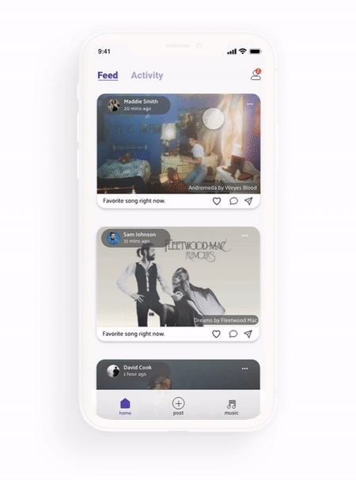
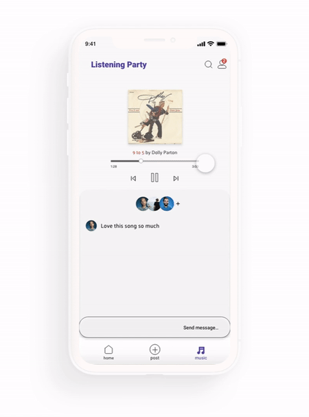
RESEARCH
Users
My first step was to conduct interviews to better understand how users
currently interact with music streaming as well as their wants & needs in a new product.
Every person interviewed expressed an interest in a streaming platform with more social features.
A couple specific insights were:
"I like getting music recs based on what I stream, but I'd also like to get them [on an app] from friends."
"I like Instagram stories + the activity feature on Spotify because I get to see what my friends are up to in
real time."
Competitors
Looking at existing sites that related to this project, either by being music- or social media-related, I noted things that did and didn't work well to give me design inspiration + identify areas where current products are lacking.
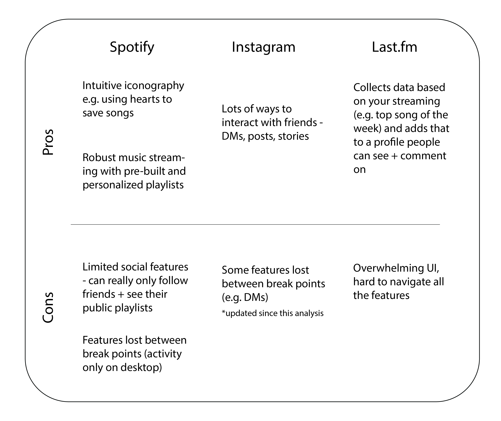
DESIGN
Initial wireframes
Inspired by social media platforms + the wants of users from interviews, I focused the homepage around friend activity + posts. The music library also has unique features like a "sent by friends" playlist populated by songs your friends DM you as well as the option to set up a "listening party" to sync music with other devices.

User testing
I conducted usability testing throughout my wireframe iterations to uncover pain points. Below are a few insights that led to design changes.
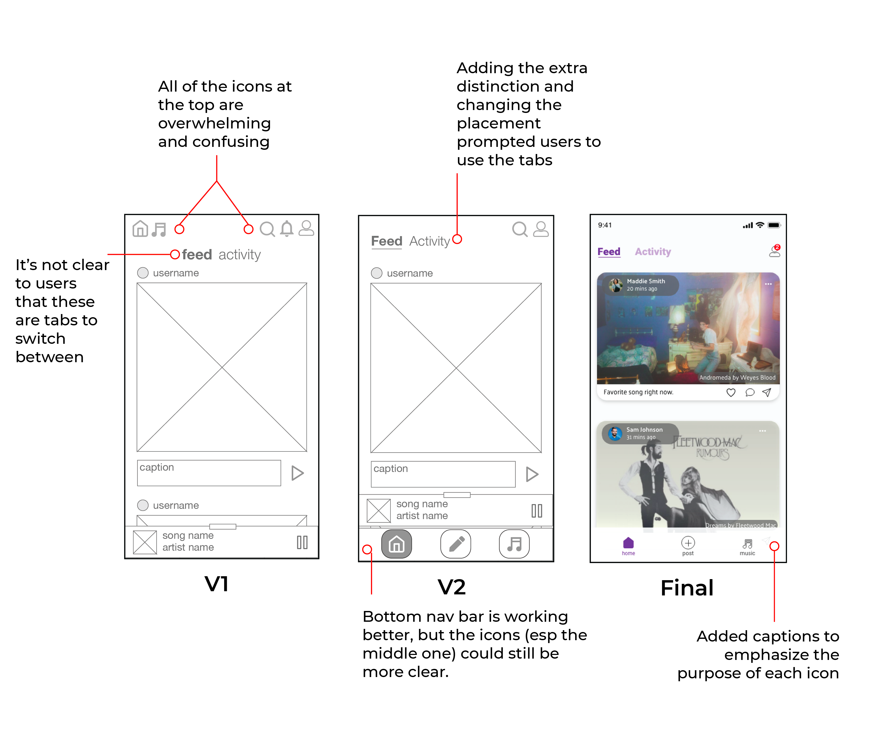
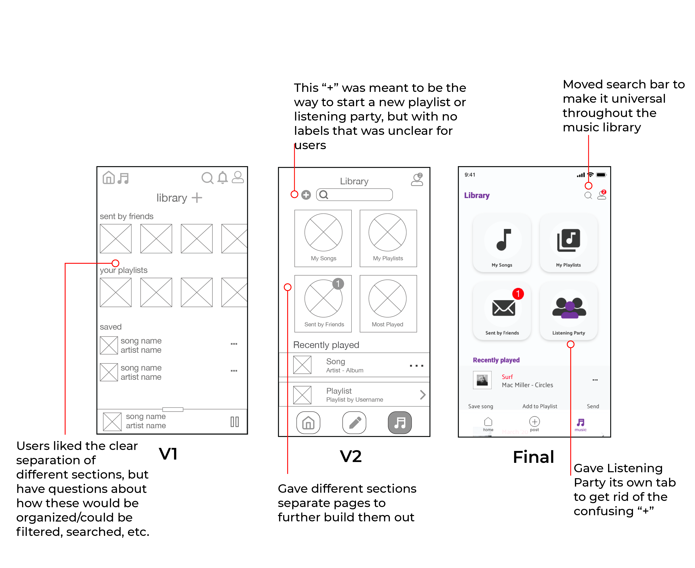
Visual identity
To help direct the visual identity of Triangle, I conducted A/B testing for two different visual directions.
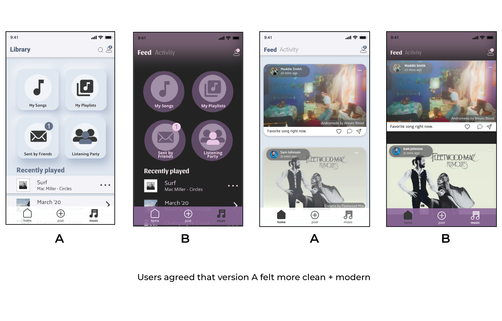
After determining to stick towards the lighter iteration of Triangle, I worked out additional details and applied it to my final screens.
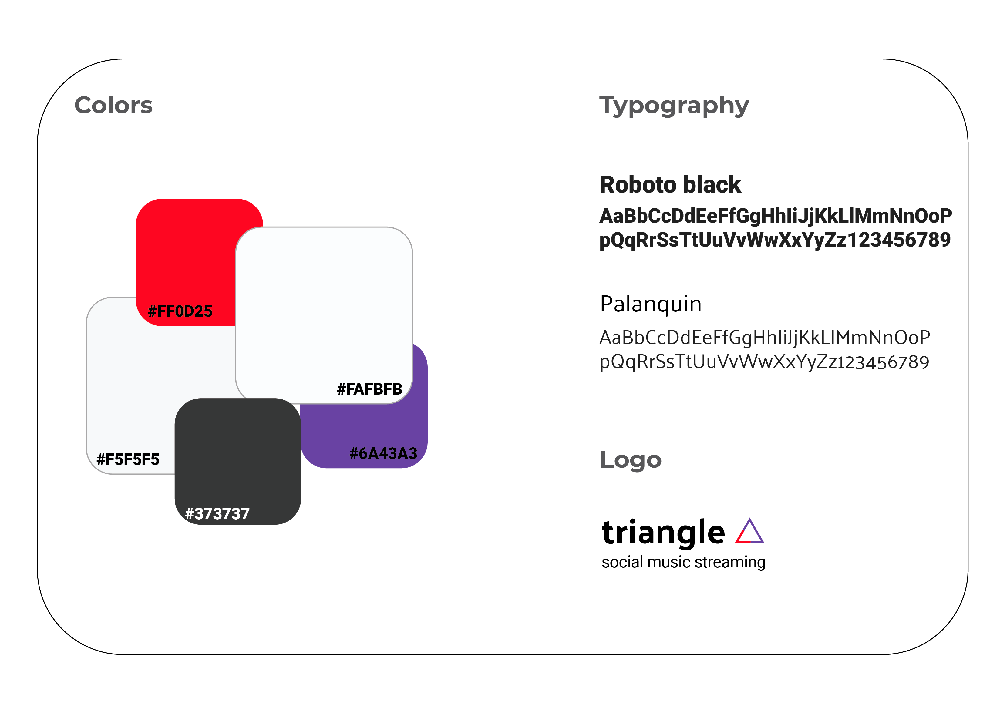
FINAL PRODUCT
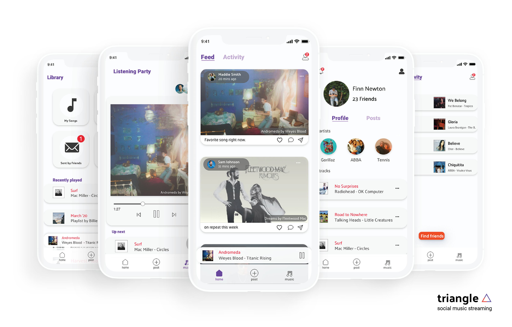
 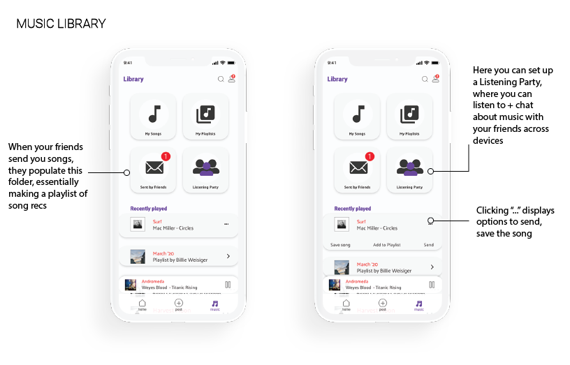
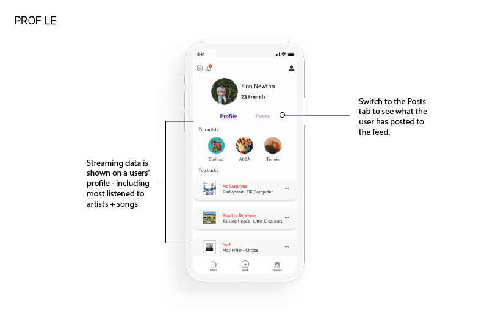
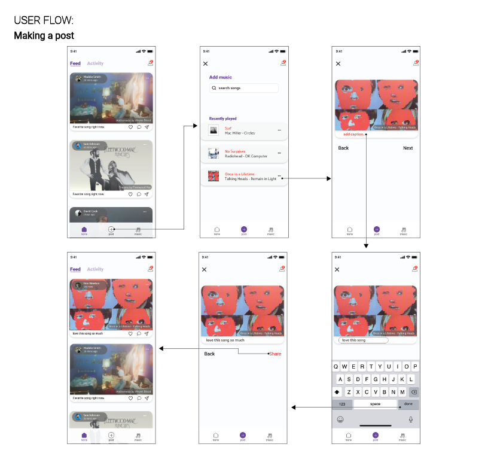
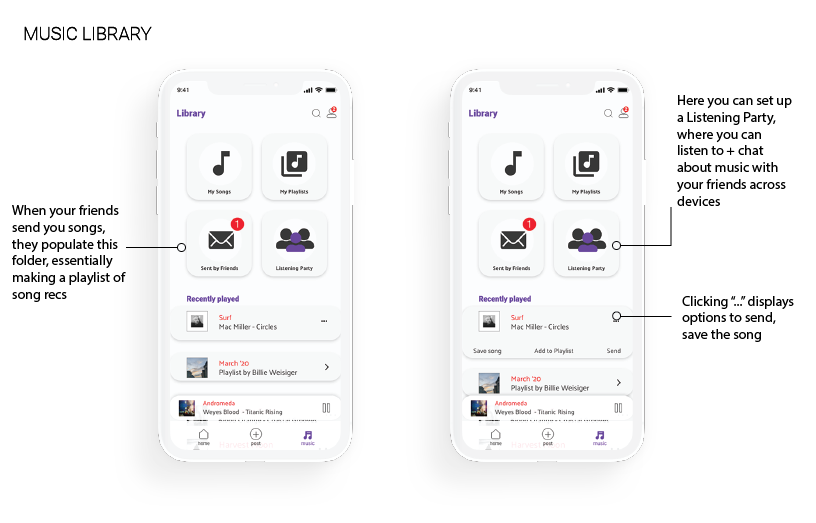
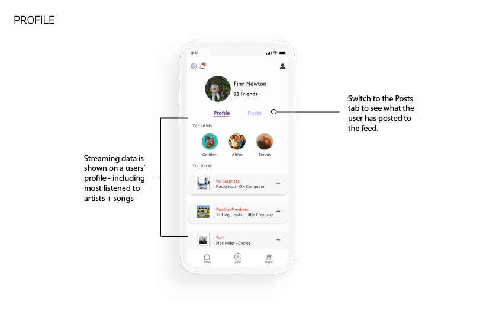
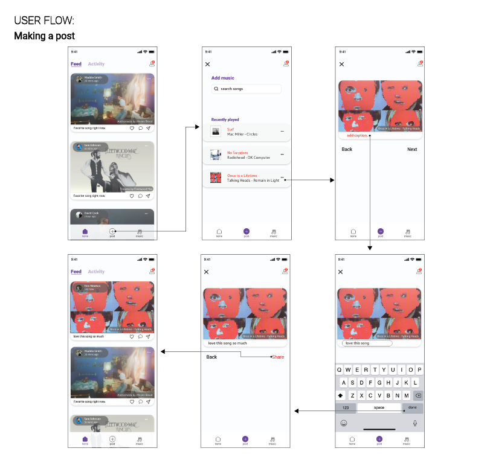
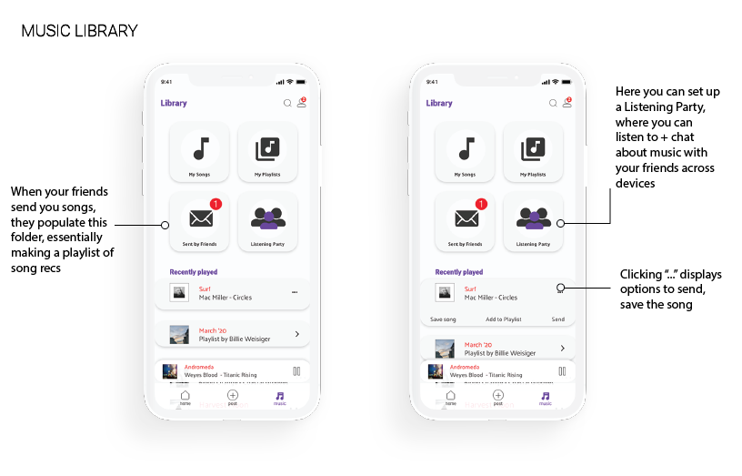
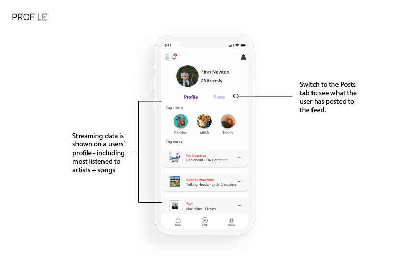
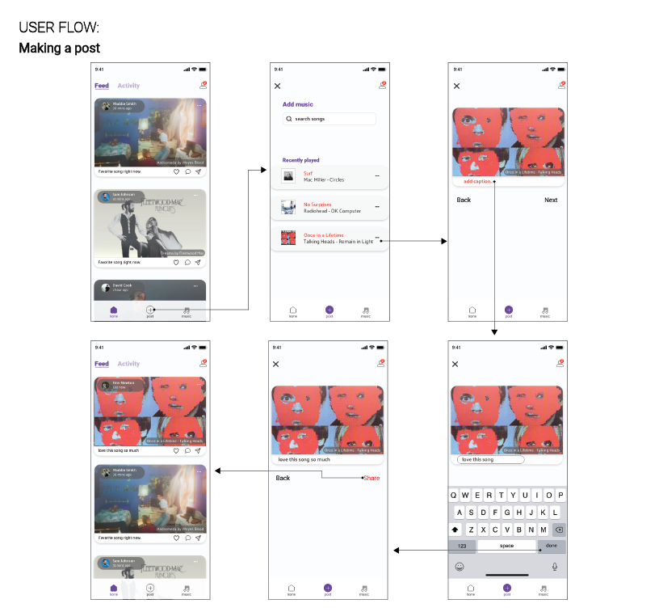
REFLECTION
This was my first completely solo UI/UX project and,
although I think I prefer collaborating with teammates, I enjoyed getting the freedom to
explore a personal interest and I'm proud of the work I created in this assignment.
Due to time constraints and the abrupt shift to working virtually because of shutdowns,
I wasn't able to get feedback on the final prototype of my app - in particular, the listening party
user flow which I fully fleshed out towards the end of the project.
My next step would be a round of usability testing focused on that feature.
See another project: